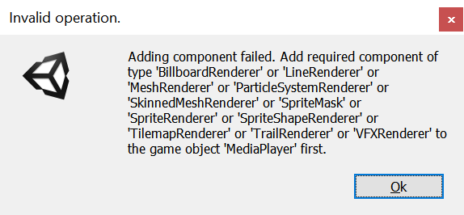
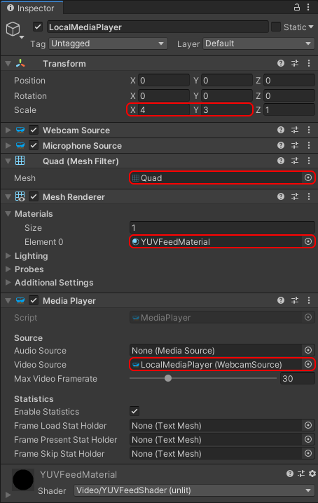

Adding local video
There are two different aspects covered by the concept of local video:
- Capturing some video feed from a local camera to send it to the remote peer
- Displaying locally the captured video feed
Both are optional, although the second one alone simply corresponds to capturing a displaying a local webcam and doesn't require WebRTC. So we generally want the first one in a scenario where an application needs WebRTC. The second one is application-dependent, and even within one given application can be toggled ON and OFF by the user.
Both cases however are covered by the LocalVideoSource component. This components serves as a bridge between a local video capture device (camera), the peer connection, and an optional video player to render the video feed locally.
Adding a local video source
For clarity we will create a new game object and add a LocalVideoSource component. It may sound superfluous at the moment to create a new game object, as we could add the local video source to the same game object already owning the peer connection component, but this will prove more clear and easy to manipulate later.
- In the Hierarchy window, select Create > Create Empty.
- In the Inspector window, rename the newly-created game object to something memorable like "LocalMediaPlayer".
- Press the Add Component button at the bottom of the window, and select MixedReality-WebRTC > LocalVideoSource.
- This component needs to know which peer connection to use. Once again, use the asset selection window to assign our peer connection to the Peer Connection property.

The local video source component contains several interesting properties:
- The Auto Start Capture property instructs the component to open the video capture device (webcam) automatically as soon as possible. This enables starting local video playback even before the peer connection is established.
- The Enable Mixed Reality Capture property tells the component it should attempt to open the video capture device with MRC enabled, if supported.
- The Auto Add Track property allows automatically adding a video track to the peer connection and start sending the video feed to the remote peer once the connection is established. If not checked, the user has to manually call some method to add that track.
These are good defaults values to start, and we will leave them as is.
Adding a media player
We said before that the LocalVideoSource component covers both sending the video feed to the remote peer and displaying it locally. This is partially incorrect. The local video source plugs into the peer connection and the video capture device, and exposes some C# event to access the video frames produced by that video device. But it does not do any rendering itself.
In order to render the video frames of the local video capture device, MixedReality-WebRTC offers a simple MediaPlayer component which uses a Unity Texture2D object and renders the video frames to it. This texture is then applied to the material of a Renderer component to be displayed in Unity on a mesh.
Let's add a MediaPlayer component on our game object:
- In the Inspector window, press the Add Component button at the bottom of the window, and select MixedReality-WebRTC > MediaPlayer
This time however Unity will not create the component, and instead display a somewhat complex error message:

What the message means is that the MediaPlayer component requires a Renderer component on the same game object, and Unity lists all possible implementation of a renderer (all classes deriving from Renderer). Although all renderers might work, in our case the most simple is to add a MeshRenderer component. If you are familiar with Unity, you also know that the renderer needs a source mesh in the form of a MeshFilter component.
So for each component, in the Inspector window, press the Add Component button at the bottom of the window, and select successively and in order:
- Mesh > MeshFilter
- Mesh > MeshRenderer
- MixedReality-WebRTC > MediaPlayer
After that, set the component properties as follow:
- In the Mesh Filter component, set the Mesh property to the built-in Unity Quad mesh. This is a simple square mesh on which the texture containing the video feed will be applied.
- The built-in Quad mesh size is quite small for rendering a video, so go to the Transform component and increase the scale to
(5,5,1). - In the Mesh Renderer component, expand the Materials array and set the first material Element 0 to the
YUVFeedMaterialmaterial located in theAssets/Microsoft.MixedReality.WebRTC.Unity/Materialsfolder. This instructs Unity to use that special material and its associated shader to render the video texture on the quad mesh. More on that later. - In the Media Player component, set the Video Source property to the local video source component previously added to the same game object. This instructs the media player to connect to the local video source for retrieving the video frames that it will copy to the video texture for rendering.
This should result in a setup looking like this:

And the Game view should display a pink square, which materializes the quad mesh:

A word on the YUVFeedMaterial material here. The video frames coming from the local video source are encoded using the I420 format. Unity on the other hand, and more specifically the GPU it abstracts, generally don't support directly rendering I420-encoded textures. So the YUVFeedMaterial material is using a custom shader called YUVFeedShader (Unlit) to load the I420-encoded video frame from the video texture, and convert it to ARGB on the fly before rendering the quad. This GPU-based conversion is very efficient and avoids any software processing on the CPU before uploading the video texture to the GPU. This is how LocalVideoSource is able to directly copy the I420-encoded video frames coming from the WebRTC core implementation into a texture without further processing, and MediaPlayer is able to render them on a quad mesh.
Test the local video
At this point the local audio source and the media player are configured to open the local video capture device (webcam) of the local machine the Unity Editor is running on, and display the video feed to that quad mesh in the scene.
Press the Play button in the Unity Editor. After a few seconds (depending on the device) the video should appear over the quad mesh.